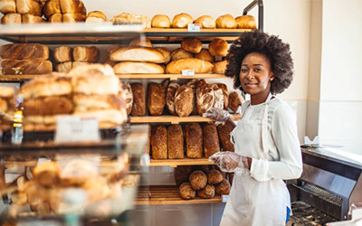
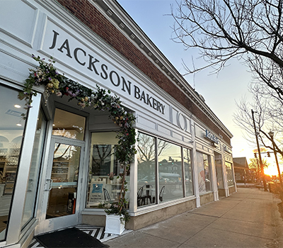
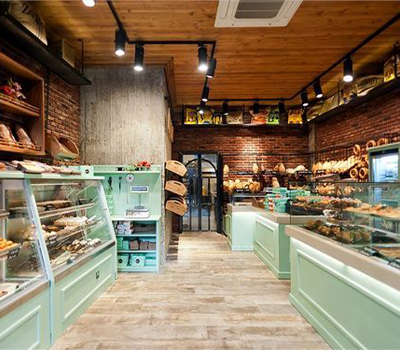

Our Bakery's Beginnings
After years of practice and formulating recipes to elevate her baking, Claire Jackson founded Jackson Bakery. The first customers were friends and the Jackson family. One influential person to Jackson was her granddaughter, Jessica, to whom she passed on her recipes. Jackson Bakery found demand in Lancaster City leading to the storefront opening in 1969. The business thrived as Jackson’s skills were
recognized by locals. As Jackson reached retirement age, she wanted someone to pass on her bakery to and she didn’t have to look far. Her granddaughter maintained an active role in the bakery and inherited her grandmother’s passion for baking. Jessica Jackson has assumed full ownership of the bakery, but continues to keep the family involved. Now, to keep business booming, this website will carry on the Jackson legacy.



